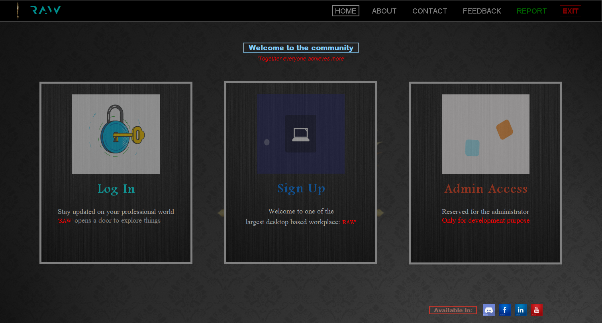

RELATED PROJECTS
EXPLORE MORE



Enhanced Java Swing-based freelancing platform with graphical user interface. Features improved UX, advanced job management, real-time notifications, and enhanced security for seamless remote work collaboration.
RAW V2.0 represents a significant evolution from its console-based predecessor, introducing a sophisticated graphical user interface built with Java Swing. This enhanced version addresses user experience challenges while expanding functionality to meet the growing demands of the remote work marketplace.
The platform features an intuitive GUI that makes navigation and operation more accessible to users of all technical levels. With improved visual feedback, real-time updates, and enhanced security measures, RAW V2.0 provides a professional-grade solution for freelancing needs while maintaining the core functionality that made the original version successful.
Modern Java Swing interface with intuitive navigation, responsive layouts, and professional visual design for enhanced user experience.
Instant notification system for job updates, bid changes, and messages to keep users informed and engaged with platform activities.
Comprehensive dashboard with analytics, project tracking, earnings overview, and performance metrics for both buyers and sellers.
Improved authentication system, encrypted communications, and secure payment processing with fraud detection mechanisms.
RAW V2.0 leverages Java Swing's robust component library to create a responsive and visually appealing interface. The application follows the Model-View-Controller (MVC) pattern, ensuring clean separation between data management, user interface, and business logic.
The backend utilizes MySQL database managed through XAMPP for efficient data storage and retrieval. The system implements event-driven programming for real-time updates and uses Java's built-in security features for data protection. The modular architecture allows for easy maintenance and future feature additions.
The GUI interface dramatically improves user experience through intuitive navigation, visual feedback, and reduced learning curve. Users can easily manage their profiles, track projects, communicate with clients/freelancers, and handle payments through a visually appealing interface.
The platform includes helpful tooltips, guided workflows for new users, and customizable dashboard layouts. The responsive design ensures consistent experience across different screen sizes and resolutions, making it accessible on various devices.